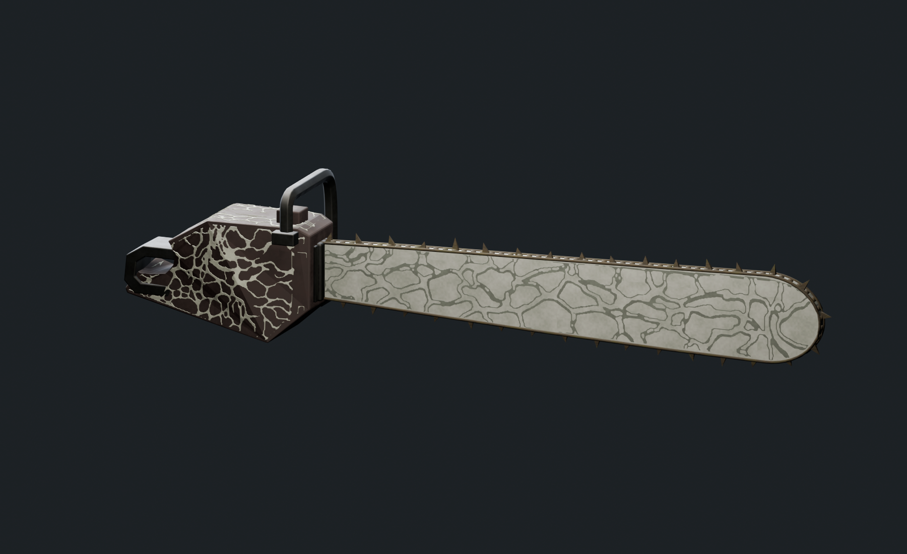
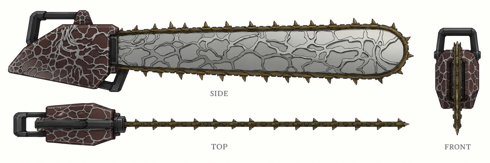
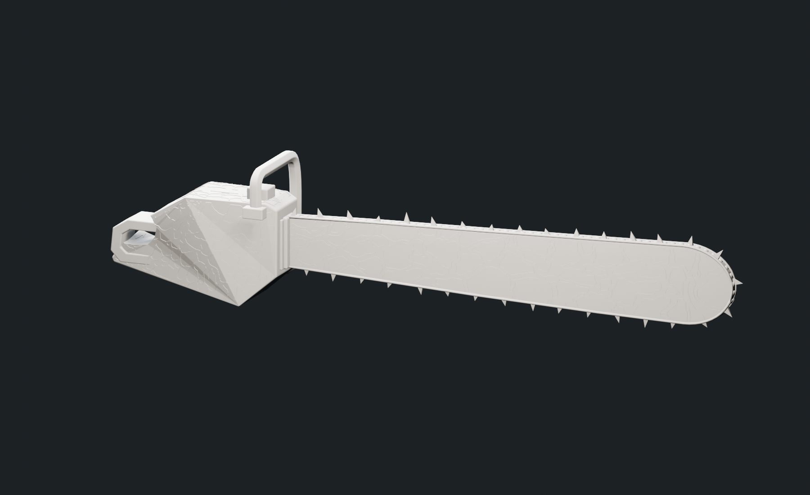
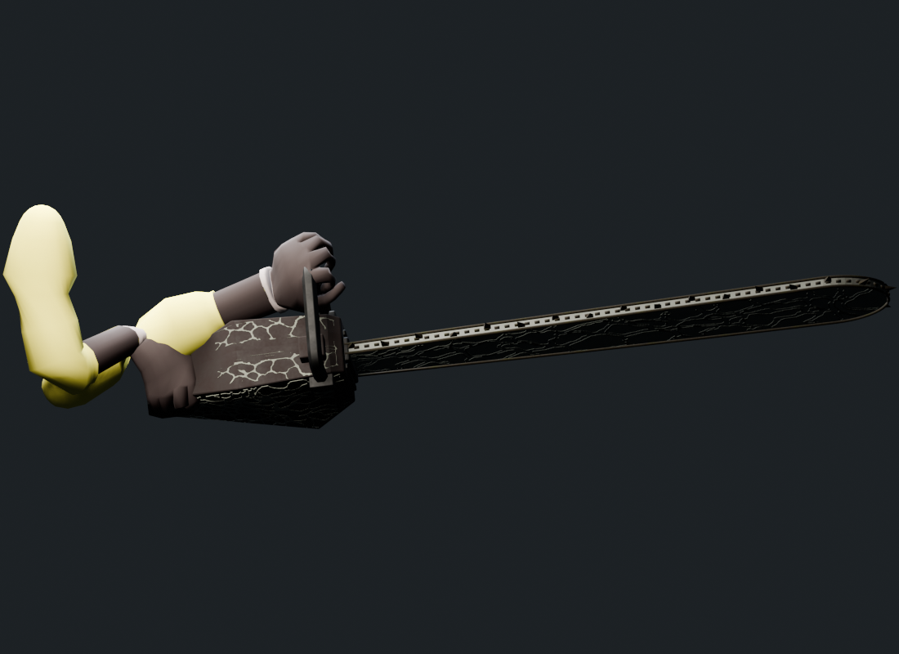
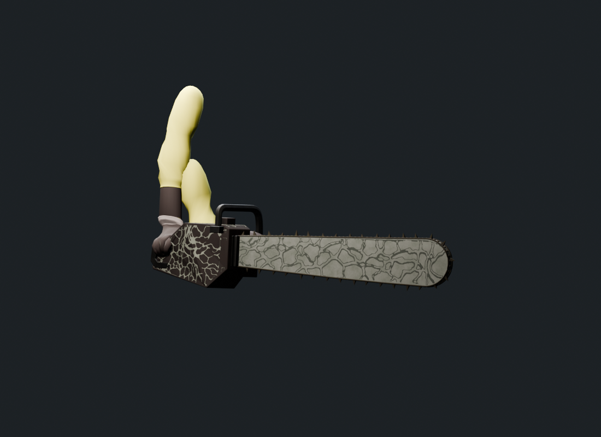
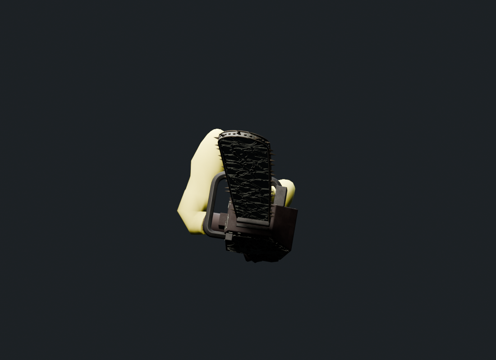
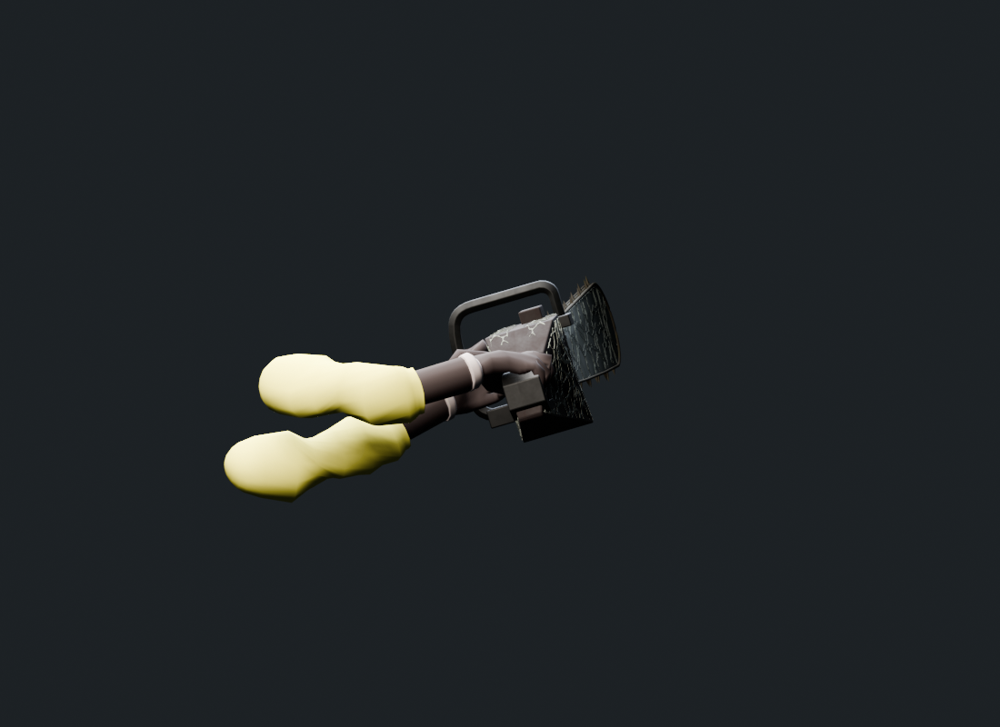
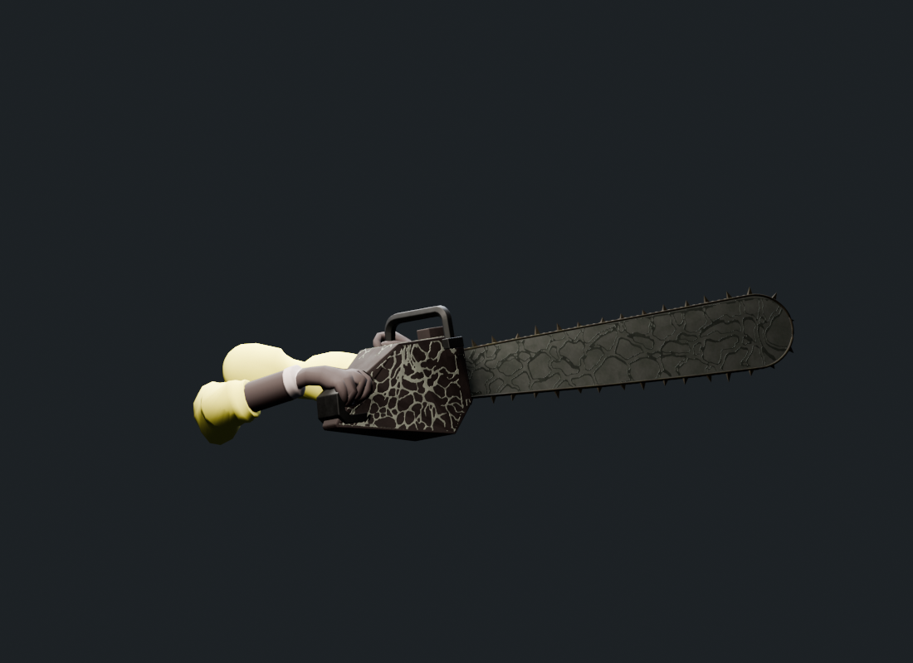
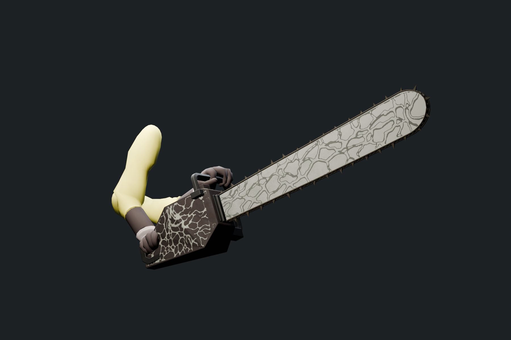

CHAINSAW / THREE VIEW REBUILD 01
回到原 FBX，依新三視圖重建
楔形暗紅褐機殼・長薄鋸片・短木質尖齒・實際菌絲低浮雕

新三視圖的機殼、刀片與表面紋路。握把依已確認選項配合原動畫。
本次外觀基準

SIDE 定義長度與輪廓，TOP 定義厚度，FRONT 核對層次。使用者已確認保留原手部動作，因此握把位置及機殼內部通道依原握持空間適配。
純幾何

菌絲的線帶與起伏由實際網格構成；材質提供基本色澤及微表面細節。
其他動作

attack2
attack3.001
attack4
melee
partition
idle，原始手部與貼圖Blender FBX 往返檢查：58 根骨骼、7 段動畫、7,714 個骨骼樣本。Unity 材質、Animator 混合、遊戲視角與效能整合尚待驗證。動畫報告 · 交付檢查 · 握持通道